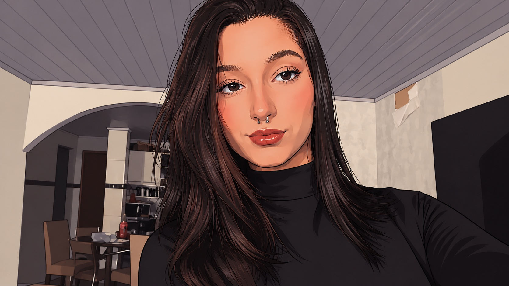
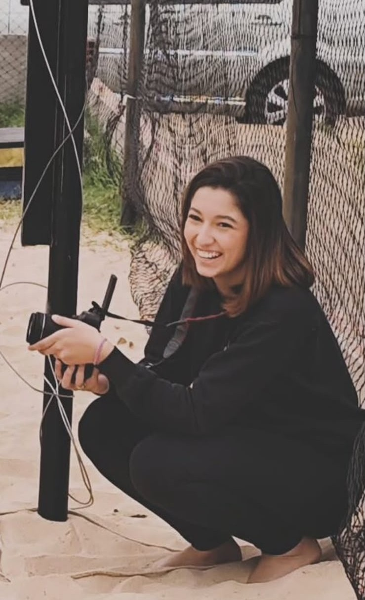
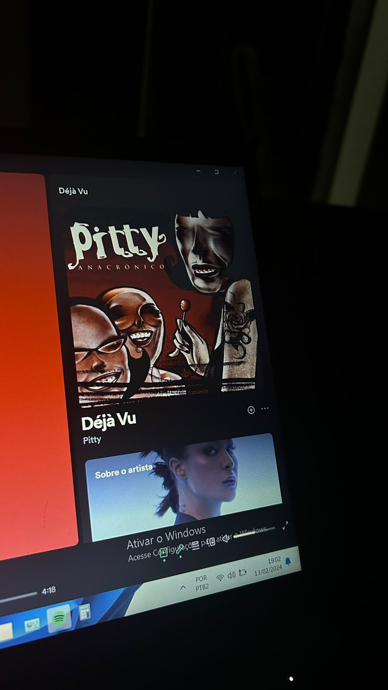
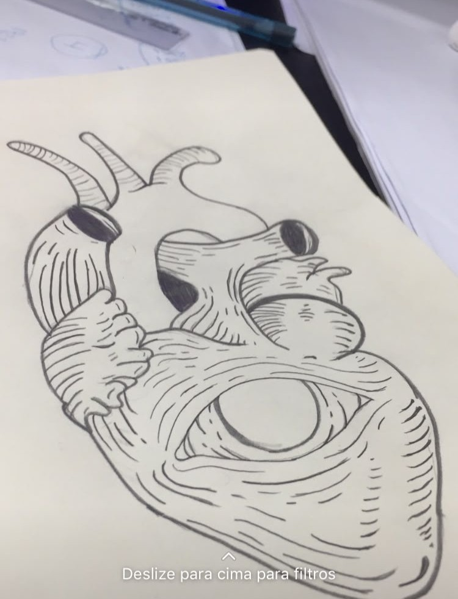

Hello, World!
|
Estudante de Sistemas de Informação, aprendendo a construir coisas para a web.

Sobre mim
Sou a Maria Eduarda, tenho 19 anos e estou cursando Sistemas de Informação na UDF, no período noturno. Minha paixão por tecnologia começou aos 15 anos, quando trabalhava no INSS e via de perto os colegas programando, e foi ali que decidi que queria seguir carreira nessa área.
Hoje, como estagiária no BRB, já tenho contato com banco de dados e percebi que é a parte de que mais gosto, curiosidade que levo também para a faculdade, onde em poucos meses aprendi HTML, CSS, JavaScript, C, SGBD e Git.
Entre o estágio, a faculdade à noite e o curso de inglês, continuo estudando por fora e buscando novas linguagens e áreas em que posso atuar no futuro.
Skills
 HTMLMonto a estrutura das páginas da web.
HTMLMonto a estrutura das páginas da web. CSSDeixo tudo bonito: cores, layout e animações.
CSSDeixo tudo bonito: cores, layout e animações. JavaScriptDou vida ao site, como o texto que digita sozinho.
JavaScriptDou vida ao site, como o texto que digita sozinho. CMinha base de lógica de programação na faculdade.
CMinha base de lógica de programação na faculdade. SGBDModelagem de banco de dados e consultas em MySQL.
SGBDModelagem de banco de dados e consultas em MySQL. GitControle de versão e trabalho em equipe no GitHub.
GitControle de versão e trabalho em equipe no GitHub.
Fora do código


